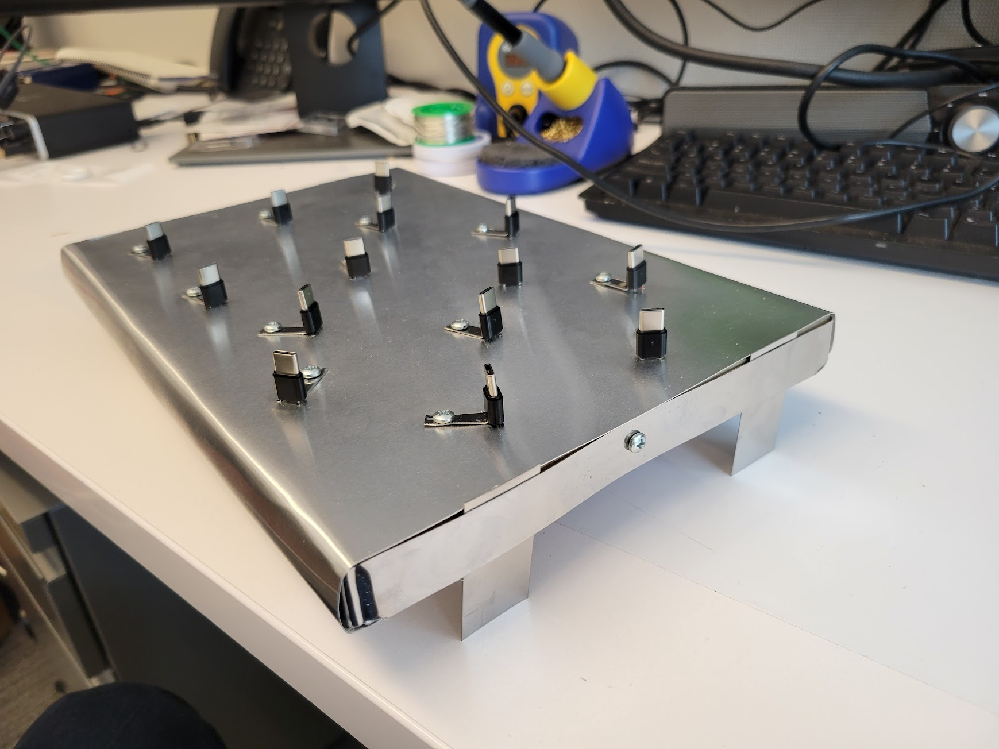
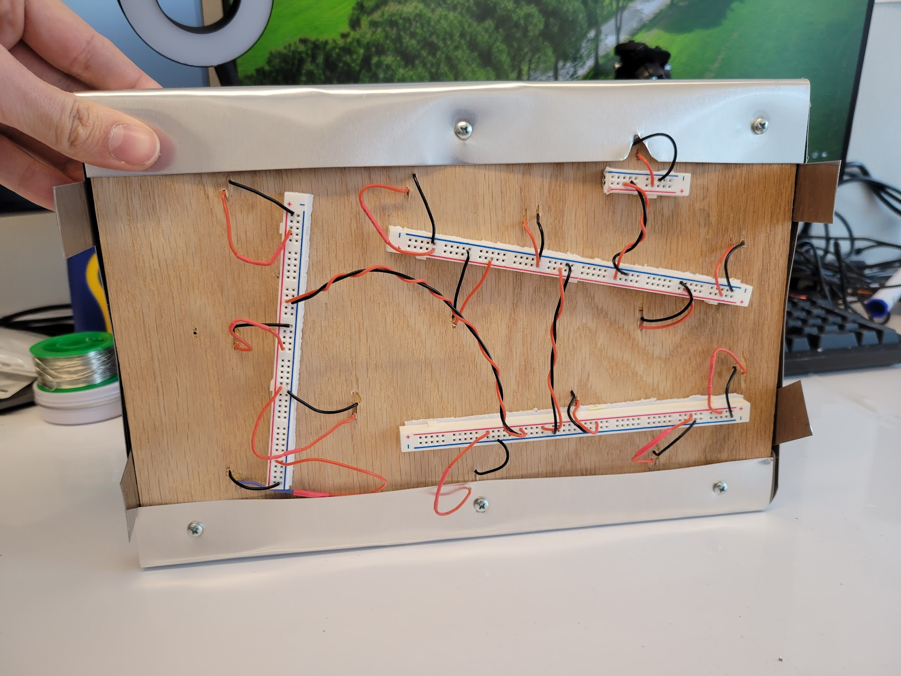

We were prompted by Prof. Santolucito to create a generative text display using TTGO ESP32's that were provided to us.
For my project, I decided to follow the song Saturday by Couch. Following through the first verse and chorus of the song, the display shows the words and chords of the song in sync with the track itself. Starting with a countdown allowing one to start playing the track at the correct time, the background color changes with each chord determined by the chord itself as well as some source of randomness (see technical documentation for more details). The display and its timings are designed to be an enjoyable experience either with or without music playing.
As we had issues with the batteries that were sent, Prof. Santolucito designed a metal board with 15 USB-C ports connected to a portable power source using breadborads to connect all of the ports to power under the visible surface.
 Given the nature of the in-class display, demonstrating the feasibility of syncing with music was not possible. However, in an isolated setting, this alternative experience of the module is possible